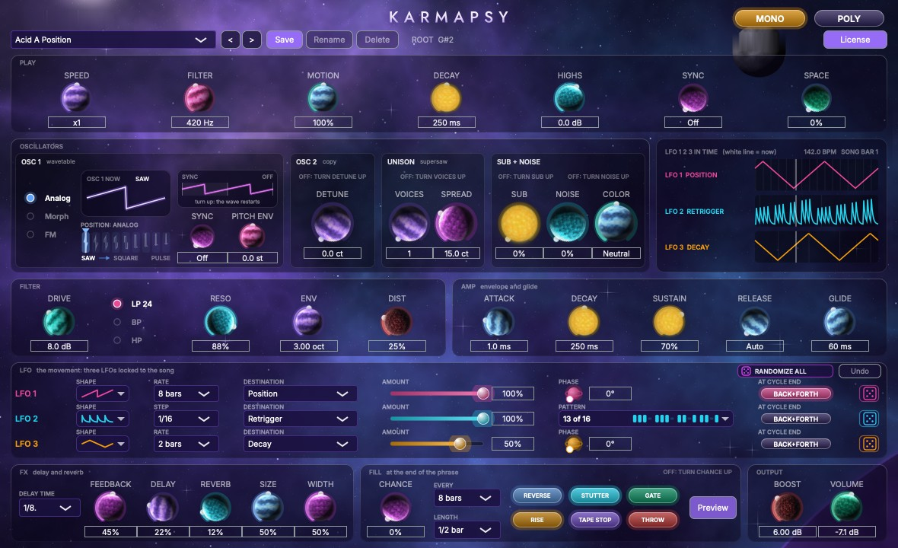
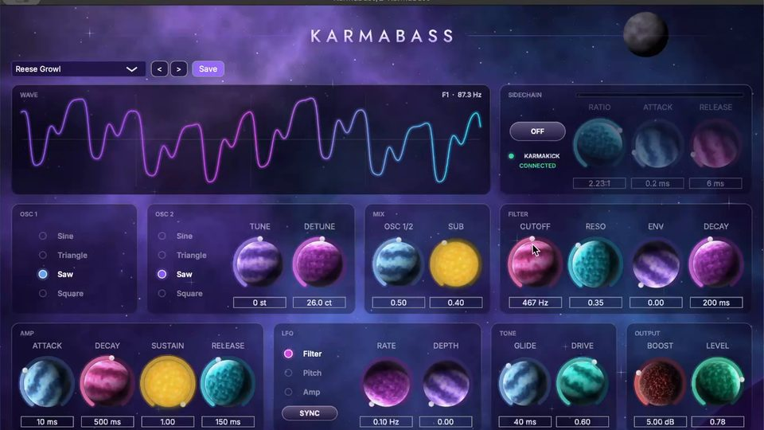
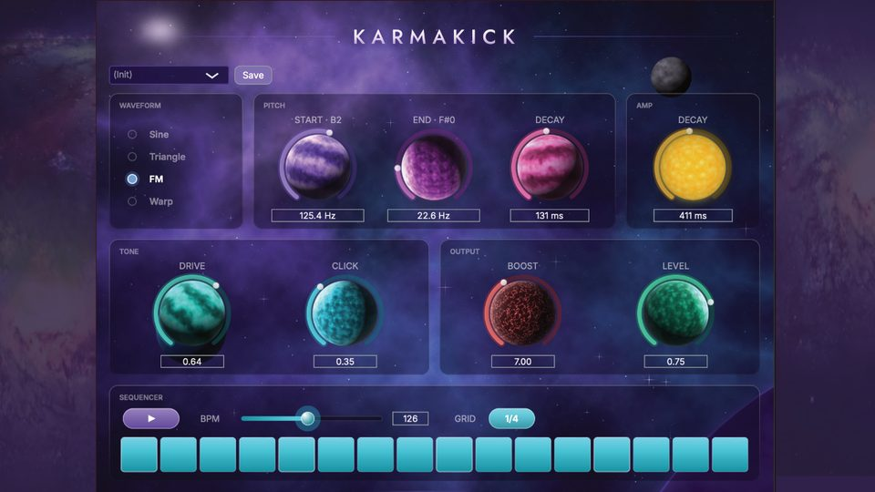
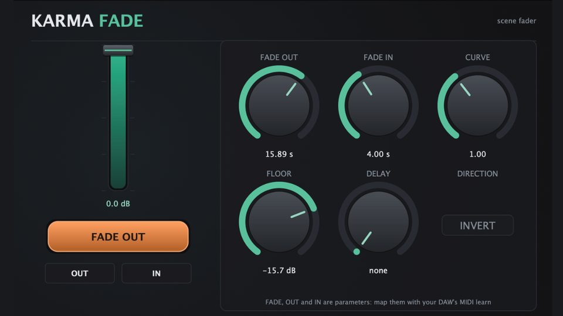
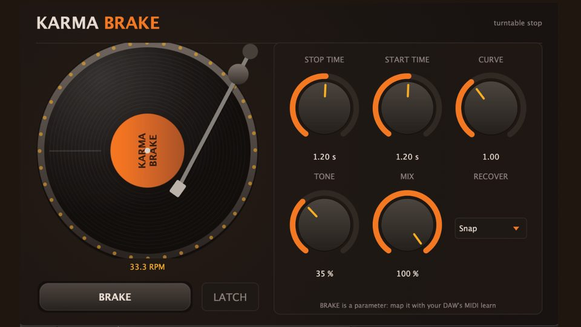

A rolling lead and bass synth for psytrance. Hold one key: it plays the line.Un synth di lead e bassi rolling per la psytrance. Tieni un tasto: la linea la suona lui.Ein rollender Lead- und Basssynth für Psytrance. Halte eine Taste: Die Linie spielt er selbst.
Out on 9 NovemberEsce il 9 novembreErscheint am 9. NovemberGet KarmaPsyPrendi KarmaPsyKarmaPsy holenSee it playGuardalo suonareSieh, wie er spielt

One long note. Three LFOs do the rest, in time with your track. Lift your finger and it stops. Press again and it drops back in on the beat.Una nota lunga. Il resto lo fanno tre LFO, a tempo col brano. Alzi il dito e si ferma. Premi di nuovo e rientra sul tempo.Eine lange Note. Den Rest machen drei LFOs, im Takt deines Tracks. Finger hoch, und es stoppt. Wieder drücken, und es setzt auf dem Beat ein.
Pick a section and it lights up.Scegli una sezione e si accende.Wähle einen Bereich, und er leuchtet auf.
What it does, and what it does not do.Cosa fa, e cosa non fa.Was es kann, und was nicht.
Your Gumroad receipt has a code. Paste it on the claim page and you get your key right away. Then click Activate in KarmaPsy.Nella ricevuta di Gumroad c’è un codice. Lo incolli nella pagina indicata e ricevi subito la chiave. Poi premi Activate in KarmaPsy.Auf deiner Gumroad-Quittung steht ein Code. Füge ihn auf der angegebenen Seite ein und du bekommst sofort deinen Schlüssel. Dann in KarmaPsy auf Activate klicken.
KarmaPsy is the first one with a key: the big shops ask for it. It works on 2 computers, and you can free one yourself from a web page.KarmaPsy è il primo con la chiave: i negozi grandi la chiedono. Vale su 2 computer, e puoi liberarne uno da solo da una pagina web.KarmaPsy ist das erste mit Schlüssel: Die grossen Shops verlangen das. Er gilt auf 2 Computern, und du kannst selbst einen über eine Webseite freigeben.
When the computer is online, at most once every two weeks: an anonymous computer code and the computer’s name, only to count computers. Your purchase email is stored with your key.Quando il computer è online, al massimo ogni due settimane: un codice anonimo e il nome del computer, solo per contare i computer. L’e-mail di acquisto resta salvata con la chiave.Wenn der Computer online ist, höchstens alle zwei Wochen: ein anonymer Code und der Computername, nur um Computer zu zählen. Die Kauf-E-Mail wird mit dem Schlüssel gespeichert.
Yes. No royalties, no credit required.Sì. Niente royalty, nessun credito richiesto.Ja. Keine Tantiemen, keine Nennung nötig.
KarmaPsy · €19 until 30 November, then €2919 € fino al 30 novembre, poi 29 €19 € bis 30. November, dann 29 €€29
Out on 9 NovemberEsce il 9 novembreErscheint am 9. NovemberGet KarmaPsyPrendi KarmaPsyKarmaPsy holen
All of them made by me, on my own. No company behind this. Just me.Tutti fatti da me, da solo. Nessuna azienda dietro. Solo io.Alle von mir gebaut, allein. Keine Firma dahinter. Nur ich.

Mono bass synth. All on one screen, and it ducks under KarmaKick with one button.Synth di basso mono. Tutto in una schermata, e si abbassa sotto KarmaKick con un pulsante.Mono-Basssynth. Alles auf einem Screen, und er duckt sich per Knopfdruck unter KarmaKick.
€19
Kick drum synth. No samples, few knobs, no manual.Synth di cassa. Niente campioni, poche manopole, nessun manuale.Kick-Synth. Keine Samples, wenige Regler, kein Handbuch.
FreeGratisGratis
Fade out on cue, with your hands full. Made for the stage.Sfuma al momento giusto, anche a mani piene. Fatto per il palco.Ausblenden auf Stichwort, mit vollen Händen. Für die Bühne gemacht.
€9
The turntable stop, as a plugin.La frenata del giradischi, in un plugin.Der Plattenspieler-Stopp als Plugin.
€9The whole shop on Gumroad →Tutto il negozio su Gumroad →Der ganze Shop auf Gumroad →